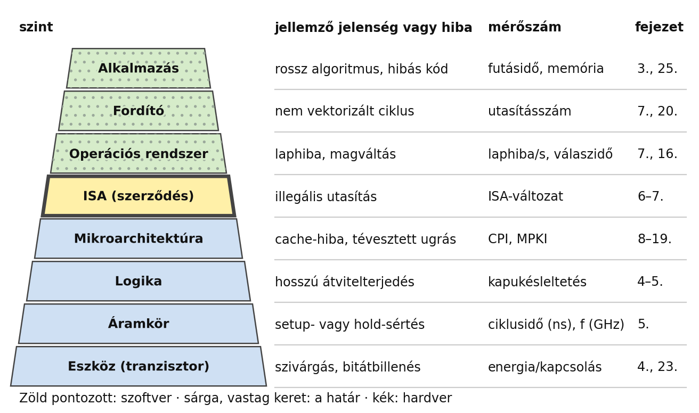
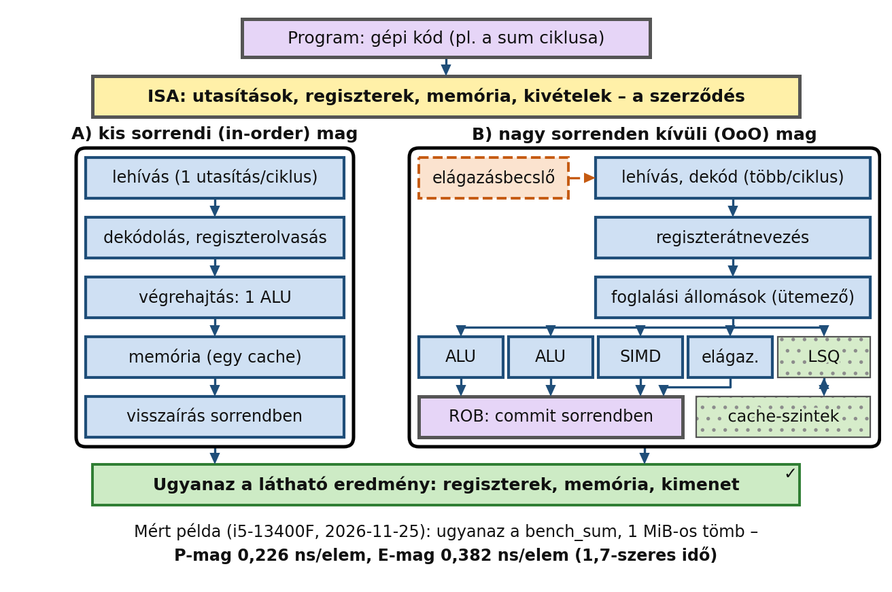

Szorozz össze két -es mátrixot három egymásba ágyazott ciklussal. A ciklusok sorrendje szabadon felcserélhető: mindhárom változat ugyanazt a millió szorzást és összeadást végzi, és ugyanazt az eredményt adja. A könyv gépén mért idők mégis nagyon eltérnek:
import sys; sys.path.insert(0, "code")
from archkit import perf
_, rows = perf.read_bench_csv("figures/data/ca048-matmul.csv")
t = {r["order"]: r["median_ms"] for r in rows if r["build"] == "novec" and r["n"] == 512}
for order in ("ikj", "ijk", "jki"):
print(f"{order}: {t[order]:6.1f} ms ({t[order] / t['ikj']:4.1f}× az ikj ideje)")ikj: 38.1 ms ( 1.0× az ikj ideje)
ijk: 251.5 ms ( 6.6× az ikj ideje)
jki: 722.4 ms (19.0× az ikj ideje)A leggyorsabb és a leglassabb sorrend között közel húszszoros a
különbség (i5-13400F, P-mag, g++ -O2 vektorizálás nélkül,
2026-11-25). A C++ nyelv szabványa erről semmit nem mond, az
utasításkészlet sem: a magyarázat elsősorban a memóriahierarchia
működésében van, jóval a programozó által írt kód alatt. Ez az alfejezet
megmutatja, milyen szintekből áll a gép, hol a határ a szoftver és a
hardver között, és miért „szivárognak át” a lenti szintek tulajdonságai
a futásidőbe.
Egy futó program mögött rétegek sora dolgozik. Az alkalmazás a fordítóra bízza a gépi kód előállítását, az operációs rendszerre a memória és a magok elosztását; a gépi kód utasításait a processzor hajtja végre, amely logikai kapukból, azok pedig tranzisztorokból épülnek.

Az ábrát soronként olvasd: minden szintnek megvan a maga jellemző jelensége és mérőszáma. A sárga, vastag keretes sor, az utasításkészlet-architektúra választja el a szoftvert (fent) a hardvertől (lent).
Definíció. Az absztrakciós szint (abstraction layer) a rendszer olyan leírása, amely egy meghatározott interfészen (a szolgáltatások és szabályok pontos felületén) keresztül szolgálja ki a fölötte lévő szintet, és elrejti a megvalósítás részleteit.
Az absztrakció haszna, hogy egyszerre csak egy szinten kell gondolkodni: egy C-ciklus írásakor nem kell tudnod, hány tranzisztor végzi az összeadást. Ára, hogy az elrejtett részletek néha mégis számítanak. Szivárgó absztrakcióról (leaky abstraction) beszélünk, amikor egy alsó szint tulajdonsága a felső szinten is érzékelhető, noha az interfész nem ígéri: a fenti mátrixszorzásnál a C nyelv „egyforma” programjai eltérő ideig futnak. A teljesítmény majdnem mindig ilyen szivárgás: a szintek a helyességet jól elrejtik, a sebességet sokkal kevésbé.
Definíció. Az utasításkészlet-architektúra (instruction set architecture, ISA) a lefordított program és a hardver szerződése: milyen utasítások vannak és hogyan kódoljuk őket, mely regiszterek láthatók, hogyan viselkedik a memória, milyen kivételek és privilégiumszintek léteznek.
Definíció. A mikroarchitektúra (microarchitecture) egy ISA konkrét hardveres megvalósítása: a futószalag, a végrehajtó egységek, a gyorsítótárak, az elágazásbecslők és az ütemezés.
Definíció. Az architekturális állapot az a rész, amelyet a program az ISA szerint megfigyelhet: a programszámláló, a regiszterek, a memória tartalma és a vezérlőregiszterek.
| Az ISA ígéri | A mikroarchitektúra dönti el |
|---|---|
| az utasítások jelentését és kódolását | hány ciklusig tart egy utasítás |
| a látható regiszterek számát (RV32I: 32) | hány fizikai regiszter van belül |
| a memória címzését, sorrendi szabályait | a cache-ek méretét, szintjeit |
| mi történik illegális utasításnál | jósolja-e az elágazásokat, és hogyan |
| az eredményt (a program látható viselkedését) | milyen sorrendben számol belül |
A táblázat bal oldala az, amire egy programot építeni szabad; a jobb oldala az, ami a sebességet meghatározza, de processzorgenerációról generációra változhat. Ezért futnak a régi programok az új gépeken is: a megvalósítás cserélődik, a szerződés marad. Új utasításokat az ISA bővítéssel kaphat (például x86-on az AVX vektorutasítások); egy ilyen utasítást használó program egy régebbi processzoron illegális utasítás kivételt kap.

Az ábra két megvalósítása ugyanazt a programot ugyanazzal a látható eredménnyel futtatja. A bal oldali sorrendi (in-order) mag programsorrendben, egyszerre kevés utasítással dolgozik; a jobb oldali sorrenden kívüli (out-of-order, OoO) mag előre néz, és a független utasításokat egyszerre, a program sorrendjétől eltérően is végrehajtja, de az eredményeket sorrendben teszi láthatóvá. Az alsó mérés a könyv gépének kétféle magját hasonlítja össze: mindkettő sorrenden kívüli (gyártói leírás; ellenőrizendő: Intel optimalizálási kézikönyv), mégis eltérő idő alatt hajtja végre ugyanazt a binárist.
Továbbvitt eredmény. Az ISA a látható viselkedést rögzíti, a mikroarchitektúra a megvalósítást és vele a sebességet: ugyanaz a bináris ugyanazt az eredményt adja, de eltérő idő alatt. Ezt a megkülönböztetést Az ISA mint szerződés: regiszterek és utasításformátumok, a RISC-V, AArch64 és x86-64 összevetése és az Egy modern mag anatómiája alkalmazza; rövid alakban: „az architektúra ígér, a mikroarchitektúra teljesít”.
A mai gépek alapvázát a Neumann-modell adja. Részei: a processzor (benne a vezérlés és a számítást végző adatút), a memória és a be- és kiviteli (B/K) eszközök. A kulcsgondolat a tárolt program: az utasítások ugyanúgy a memóriában lévő számok, mint az adatok. A processzor sorban beolvassa és végrehajtja őket, a programszámláló (program counter, PC) mutatja, melyik következik. Ezért lehet egy programot fájlként másolni, és ezért állíthat elő a fordító (egy program) más programot.
Következménye, hogy az utasítások és az adatok ugyanazon az útvonalon versenyeznek a memóriáért. A Harvard-felépítés külön utasítás- és adatmemóriát (vagy -útvonalat) használ. A mai processzorok vegyesek: a magban külön első szintű utasítás- és adat-gyorsítótár van (a könyv gépe is ilyen), alatta közös cache és közös memória. Kívülről Neumann-gépet látsz, belül a gyorsítás kedvéért Harvard-szerűen működik.
Három folyamat magyarázza, miért olyan a mai processzor, amilyen.
A memóriafal a könyv gépén közvetlenül látszik. Egy mutatólánc, amely véletlenül ugrál, minden lépésnél megvárja az előző betöltést. Ha a lánc 32 KiB-on belül marad (az első szintű cache-ben), egy lépés 1,14 ns; ha 256 MiB-on szóródik, 77,5 ns, vagyis 4,58 GHz-en körülbelül 355 órajelciklus (a címfordítás költségével együtt; Memóriavezérlő, sávszélesség és mérés). Ennyi idő alatt egy mai mag több száz utasítást el tudna végezni, ha nem kellene várnia.
Továbbvitt eredmény. A memóriafal: a főmemóriából való betöltés száz–több száz órajelciklus (a könyv gépén 355), a legközelebbi gyorsítótárból néhány. Ez motiválja a Lokalitás és a memóriahierarchia és A DRAM működése anyagát.
A könyv a programozó szemével nézi a gépet: azt vizsgálja, mit tesz a hardver a kódoddal. A hibákat és a lassulásokat a megfelelő szinten keressük: egy lassú ciklusnál először azt kérdezzük, mennyi az utasításszám (fordító), mennyi a CPI (mikroarchitektúra), és mennyit várunk a memóriára; csak utána nyúlunk az algoritmushoz vagy a kódhoz.
A sum ciklus RISC-V változata (a következő alfejezet
mutatja be)
elemre
utasítást hajt végre;
esetén
.
Két feltételezett gépen futtatjuk, mindkettő ugyanazt az ISA-t valósítja
meg. A futásidő a vasegyenlettel
,
ahol CPI az utasításonkénti átlagos ciklusszám (Végrehajtási idő, CPI és a vasegyenlet).
| Gép | CPI | órajel | |
|---|---|---|---|
| M1 (egyszerű) | 1,6 | 1 GHz | µs |
| M2 (nagy) | 0,5 | 3 GHz | µs |
M2 tehát -szor gyorsabb, bár az órajele csak háromszoros: a maradék a kisebb CPI-ből jön.
Most tegyük fel, hogy M2-n az 1000 betöltés mindegyike a főmemóriáig megy, és egymás után kell kivárni őket, egyenként a mért 77,5 ns-ig. Ez egyedül ns µs, a számítás idejének 93-szorosa. Az átlagos CPI így µs GHz . A CPI tehát nem az ISA tulajdonsága: ugyanaz a program ugyanazon a mikroarchitektúrán is egészen más CPI-t kaphat attól, hol vannak az adatai.
Először ugyanazt a RISC-V-programot futtatjuk az
archkit.riscv értelmezőn, majd a nyomát (a végrehajtott
utasítások listáját) három futószalag-modellen. A futószalagot a A futószalag elve: átbocsátás és késleltetés építi
fel; itt elég annyi, hogy három eltérő megvalósítás: A
nem továbbít eredményt a szakaszok között, B igen,
C ezen felül mindig ugrásra tippel az elágazásoknál.
Közben a kibontott (unroll) ciklust is kipróbáljuk, amely más program
ugyanarra a feladatra.
from archkit import bpred, pipeline, riscv
values = list(range(1, 65))
for unroll in (1, 4):
m = riscv.run(riscv.sum_src(values, unroll=unroll))
print(f"unroll={unroll}: eredmény {m.reg('s0')}, N_I = {len(m.trace)}")
designs = {"A": dict(forwarding=False), "B": dict(forwarding=True),
"C": dict(forwarding=True, predictor=bpred.Static("taken"))}
for name, cfg in designs.items():
r = pipeline.simulate(m.trace, **cfg)
print(f" {name}: {r.cycles} ciklus, CPI = {r.cpi:.2f}")unroll=1: eredmény 2080, N_I = 333
A: 725 ciklus, CPI = 2.18
B: 531 ciklus, CPI = 1.59
C: 407 ciklus, CPI = 1.22
unroll=4: eredmény 2080, N_I = 195
A: 273 ciklus, CPI = 1.40
B: 233 ciklus, CPI = 1.19
C: 205 ciklus, CPI = 1.05Az eredmény (2080) mind a hat esetben azonos. Egy programon belül azonos, a CPI és a ciklusszám a megvalósítástól függ. A kibontás viszont az -t is megváltoztatja: ez a fordító (vagy a programozó) szintje. A vasegyenlet két tényezőjét két különböző réteg dönti el.
Most ugyanez a valódi gépen: a P- és az E-mag ugyanazt a binárist futtatja.
_, steps = perf.read_bench_csv("figures/data/ca044-lepcsok.csv")
t = {r["core"]: r["median_ns_per_elem"] for r in steps if r["bytes"] == 2**20}
cases = {"sum, 1 MiB": t}
_, br = perf.read_bench_csv("figures/data/ca033-rendezett-tomb.csv")
for pattern, label in (("sorted", "branchy, rendezett"), ("alternating", "branchy, váltakozó")):
cases[label] = {r["core"]: r["median_ns_per_elem"] for r in br if r["build"] == "novec"
and r["variant"] == "branch" and r["pattern"] == pattern}
for label, c in cases.items():
print(f"{label:20} P {c['P']:.3f} E {c['E']:.3f} ns/elem E/P {c['E'] / c['P']:5.1f}")sum, 1 MiB P 0.226 E 0.382 ns/elem E/P 1.7
branchy, rendezett P 0.219 E 0.623 ns/elem E/P 2.8
branchy, váltakozó P 0.218 E 5.573 ns/elem E/P 25.5A váltakozó (minden második elem teljesíti a feltételt) mintánál a két mag között több mint huszonötszörös a különbség, miközben a program, a fordítás és az adat azonos. A mérés önmagában nem mondja meg az okot; az elágazásbecslők működését a 11. fejezet tárgyalja.
values hosszát 8-ra, majd 640-re.
Mielőtt futtatod, jósold meg
-t
a
képlettel (kibontás nélkül; 53, illetve 3213 utasítás). A B terv CPI-je
8 elemnél 1,57, 640-nél 1,60: miért tart a CPI egy határértékhez, ahogy
a rövid bevezető és befejező rész súlya csökken?designs szótárhoz egy D tervet, amelyben a
forwarding kulcs False, a
predictor pedig bpred.Static("taken"). Az A
tervhez képest melyik fejlesztés hoz többet 64 elemnél, a továbbítás (B)
vagy a tippelés (D)? A B terv 531, a D terv 601 ciklust ad.make -C code/bench build/bench_matmul), és futtasd kis
méreten:
code/bench/build/bench_matmul --cpu 2 --n 256 --orders ijk,ikj,jki.
A saját gépeden melyik sorrend a leggyorsabb?-march=native).
Javítás: a célgép utasításkészletére fordíts.sum
kétszeres kibontásával (unroll=2) számold ki a három terv
ciklusszámát! Melyik réteg változott a kibontatlan változathoz képest,
és melyik a három terv között?A gép absztrakciós szintekre bomlik az eszköztől az alkalmazásig; minden szintnek saját jellemző jelenségei és mérőszámai vannak. A szintek a helyességet jól, a sebességet rosszul rejtik el (szivárgó absztrakció). Az ISA a látható viselkedés szerződése: utasítások, regiszterek, memória, kivételek; a mikroarchitektúra a megvalósítás: futószalag, cache-ek, becslők. Ugyanaz a bináris ugyanazt az eredményt adja különböző megvalósításokon, eltérő idő alatt. A Neumann-gépben a program is adat a memóriában. A vasegyenlet tényezői közül az utasításszámot a program és a fordító, a CPI-t és az órajelet a megvalósítás alakítja. A fejlődést a Moore-törvény, a Dennard-skálázás vége és a memóriafal alakítja: a könyv gépén egy főmemória-betöltés kb. 355 ciklus, egy első szintű cache-találat kb. 5.
1. (a) operációs rendszer; (b) mikroarchitektúra (memóriahierarchia); (c) ISA; (d) áramkör (időzítés); (e) fordító.
2. ISA: a regiszterek száma, az utasítások hossza, a privilégiumszintek. Mikroarchitektúra: a cache mérete, a szorzás ciklusszáma, a becslő fajtája.
3. s, s. Az A gép -ször gyorsabb, noha a CPI-je rosszabb: a CPI csak az órajellel és az utasításszámmal együtt ad időt.
4. ns ms. Egy betöltés ciklus, ez összeadásnyi lehetőség.
m = riscv.run(riscv.sum_src(values, unroll=2))
res = [pipeline.simulate(m.trace, **cfg).cycles for cfg in designs.values()]
print(m.reg("s0"), len(m.trace), res)2080 239 [409, 309, 249]A kibontással a program (fordítói szint) változott: kevesebb a ciklusvezérlő utasítás, ezért kisebb az . A három terv között a mikroarchitektúra változik: ugyanarra a nyomra más a ciklusszám.
Igen. (1) Ha a program a ciklusszámlálót vagy az órát olvassa, az eredmény az időzítéstől függ, amit az ISA nem rögzít. (2) Többszálú programnál, szinkronizáció nélkül, a memóriamodell több kimenetet is megenged, és a megvalósítások közül egyesek ritkán, mások gyakran mutatják valamelyiket (Szekvenciális konzisztencia és litmus-tesztek). Az ISA nem egyetlen végeredményt, hanem a megengedett viselkedések halmazát ígéri; egy helyes mikroarchitektúra ennek elemei közül produkál egyet.